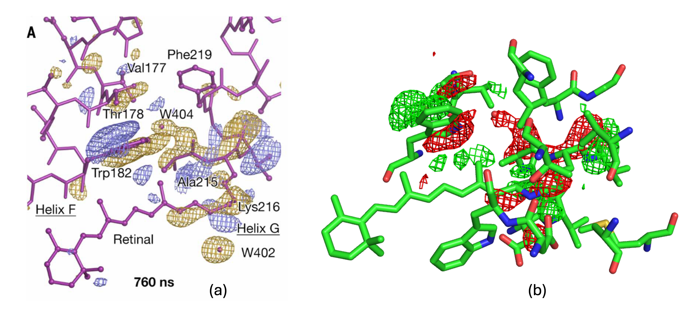
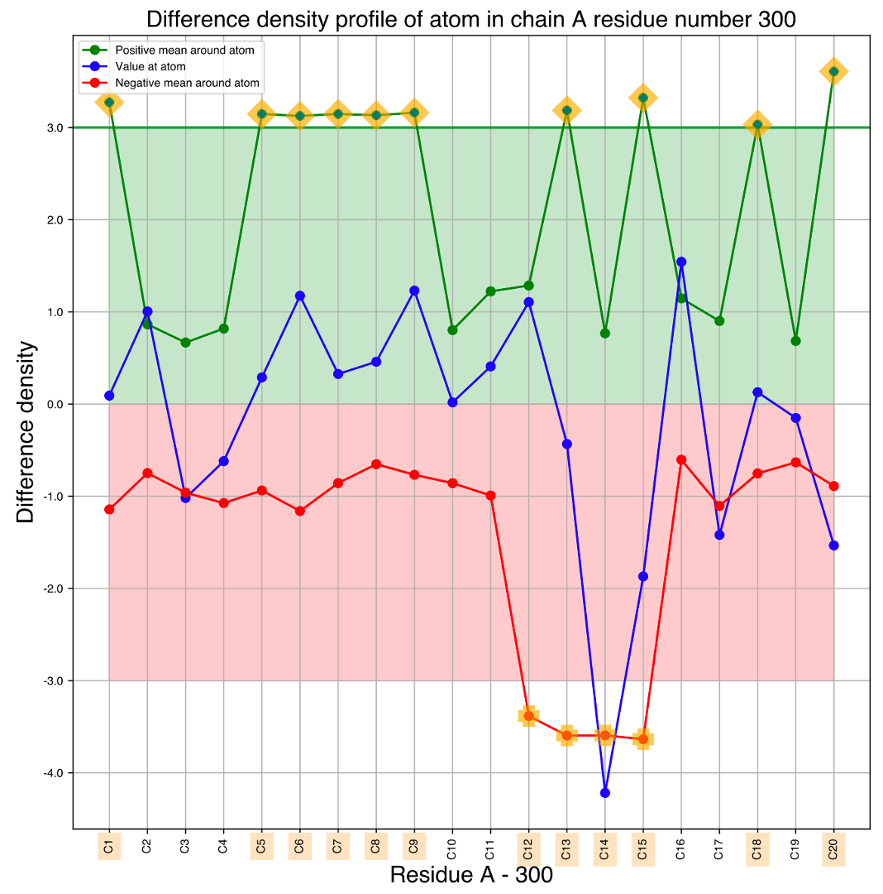
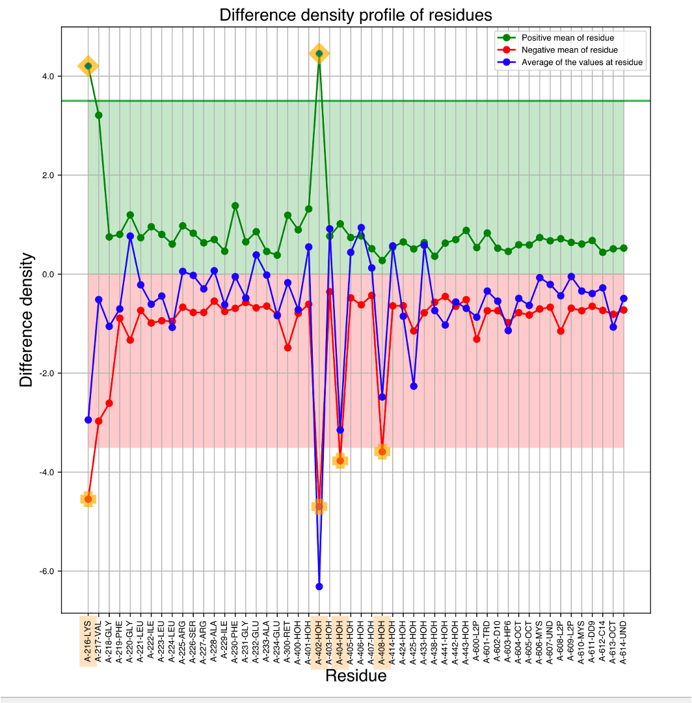
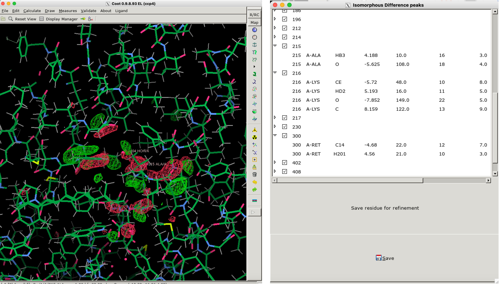
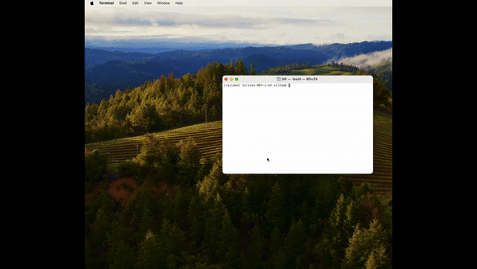
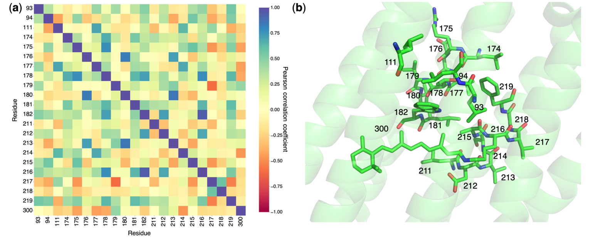
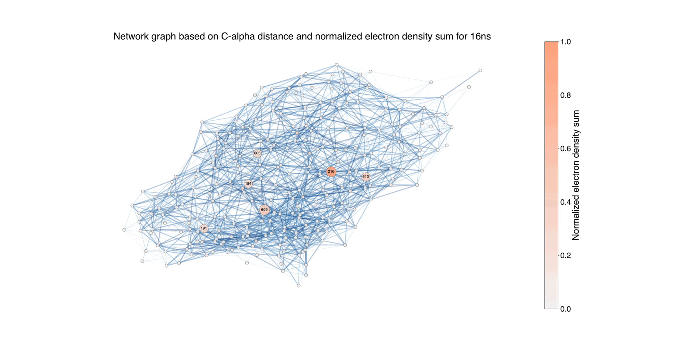

Analyzing the results
The description of the results after running the ResiDEM command to analyze the DED maps is given forthwith.
The below example shows the command line argument to generate DED maps of bacteriorhodopsin protein for 760 ns time delay published by Nango et al.,. In this case study, no weights are added, but optional weights can be added, more details of which can be found in command line options.
mkdir bR
cd bR
# copy the data associated with 760ns given the current working directory
# is test_data available in tests directory of the repository
cp ../dark/5b6v.* . ;cp ../05_760ns/5b6x.* .
tree # If you see the file in the folder we see the following
.
|-- 5b6v.mtz
|-- 5b6v.pdb
|-- 5b6x.mtz
`-- 5b6x.pdb
Running the command
residem -r 5b6v.pdb -m 5b6v.mtz -t 5b6x.mtz -s 3.5 # here, 3.5 σ is taken to reproduce image similar
# to the published data. Default is 3.0 σ in tool.
It takes ~5 minutes depending on the number of available processors, the time may also vary for different proteins, which depends on the size of the unit cell.
{kind=link}
Overview of the results
After running the calculations, if we again see the list of contents in the directory, we see the following:
.
|-- 5b6v.mtz
|-- 5b6v.pdb
|-- 5b6x.mtz
|-- 5b6x.pdb
`-- Data_folder_0
|-- Difference_map_weighted_all.mtz
|-- Difference_structure_factor_distribution.pdf
|-- F_obs_minus_F_obs.ccp4
|-- F_obs_minus_F_obs_hekstra_weight.ccp4
|-- F_obs_minus_F_obs_ren_weight.ccp4
|-- F_obs_minus_F_obs_ursby_weight.ccp4
|-- R_iso_CC_iso.pdf
|-- Residem.log
|-- Wilson_plot_comparison.pdf
|-- input.phil
`-- map_dump_default
|-- chain_A_U
| |-- Atom_peak_height_chain_A_U.pdf
| |-- Residual_peak_height.csv
| `-- Residual_peak_height_mean_chain_A_U.pdf
|-- chain_A_U_csv
| |-- map_dump_common_both_postv_n_negtv_chain_A_U.csv
| |-- map_dump_full_negative_chain_A_U.csv
| |-- map_dump_full_positive_chain_A_U.csv
| `-- map_dump_full_positive_negative_chain_A_U.csv
`-- chain_A_U_json
|-- map_dump_common_both_postv_n_negtv_chain_A_U.json
|-- map_dump_full_negative_chain_A_U.json
|-- map_dump_full_positive_chain_A_U.json
`-- map_dump_full_positive_negative_chain_A_U.json
input.philis a Python Hierarchial Input Language (phil) file containing all the input argument which can be used for reproduction.Difference_map_weighted_all.mtzmtz file contains difference map without and with weight for all the implemented weights and the phase of the reference model.Difference_structure_factor_distribution.pdffile contains distribution of the Difference structure factor with and without weights plotted as a function of signal-to-noise ratio.*.ccp4The DED maps in CCP4 format for various weights.R_iso_CC_iso.pdffile contains a plot representing \(R_{iso}\) and \(CC_{iso}\).Residem.logis a log file containing all the details.Wilson_plot_comparison.pdfcontains Wilson plot of normalized intensities before and after scaling. Ideally the slope of the intensities should be similar.map_dump_defaultfolder contains results of difference peak details for individual chains.
For example the file folder map_dump_default contains another folder chain_A_U. Here, A_U means chain A(uppercase),
the chain can also be lower case like chain a.
The tool will generate Atom_peak_height_chain_A_U.pdf and Residual_peak_height_mean_chain_A_U.pdf, where the
mean difference density around a atom and peak is calculated for the entire protein. This method is similar
to the method proposed by maptool.
Bacteriorhodopsin(bR) is a proton pump driven by the photoisomerization of a retinal chromophore (RET 300 ) that is covalently attached by Schiff base to a Lys residue. Nango et al. used time-resolved serial femto-second crystallography at an x-ray free electron laser to provide 13 structural snapshots of the conformational changes that occur in the nanoseconds to milliseconds after photo-activation. Figure 1(a) corresponds to the 760ns triggered state in bR, this image corresponds to Figure 6 in their paper. Figure 1(b) corresponds to DED map of same 760ns generated by ResiDEM, which could highlight identical features.
 Figure 1: DED maps for 760ns triggered state (a) taken from Nango et al. paper at 3.5 σ (b) generated from map obtained from ResiDEM using pymol at 3.5 σ.
Isomerism of the Retinal also disturbs its planarity, which could be visible from difference density near C20 atom of retinal(RET 300).
If we see the one dimensional atom wise representation of the difference density for RET 300 (Atom_peak_height_chain_A_U.pdf) as shown in Figure 2,
we could see positive difference density associated to C20 and negative density associated to atoms (12-15) connected to LYS 216 via Schiff base.
The image of the Schiff base can be referred to in Figure 1 of Nango et al. paper.

Figure 2: One-dimensional representation of density values in the difference map around (a threshold radius of 2 Å) each of atoms in the retinal, shown for the data at the time period of 760 ns structure. The green point indicates the mean density value near the atom, the red point shows the mean density value near the atom, and the blue points indicates the density values closest to the atom. The emphasized texts show the atom positions where there are strong difference densities around them.
If we see the residue wise mean from all atoms (Residual_peak_height_mean_chain_A_U.pdf), it can identify the major contributors.
Figure 3 plots mean contribution of difference density for all residues.

Figure 3: Residue-based one-dimensional representation of the density values in the difference map at the time period of 760 ns. The green point represents the mean density around the residue (voxels within a threshold radius of 2Å from the atoms in the residue), the red point signifies the mean density around the residue, and the blue points show the average of the density values closest to each atom within each residue. The emphasized texts show the residue positions where there are strong difference densities around them.
Using clustering techniques,ResiDEM could also identify all the residues associated with the difference density as shown in Figure 4.
The result of the difference density estimates are given in the files map_dump_common_both_postv_n_negtv_chain_A_U
,map_dump_full_negative_chain_A_U,map_dump_full_positive_chain_A_U,map_dump_full_positive_negative_chain_A_U either in csv or json format.
 Figure 4: Overview of ResiDEM identifying the residues that are involved in the electron density changes observed in isomorphous difference maps. A GUI, an add-on to Coot, is provided to visualize the difference densities and associated list of atoms.
Figure 4 shows a representation of DED maps in coot. It can be reproduced using the following command.
residem_coot -r 5b6v.pdb -m Data_folder_0/F_obs_minus_F_obs.ccp4

Figure 5: Animation of procedure to open the json file to preview the location of the associated residues in DED maps, A clearer version can be found here .
The clustering could identify negative difference density associated with C14 atom and positive density associated with C20 for RET 300. In clustering method, one blob is associated with one atom which reduces the overall complexity. It might or might not help to pinpoint all associated atoms as one of its limitations unlike atom-wise representation. On the other hand, given that DED maps are noisy in general, atom-wise representation can highlight noise which might makes interpretation difficult from the plot. Further analysis of the clustering base results can help reduce to identify significant contributors alone.
One dimensional analysis of difference density obtained from clustering.
Note
Note the name of the folder chain_A_U_csv might change depending on the chain identifiers present in the pdb.
Now, any of the files in the folder chain_A_U_csv can be selected to plot one dimensional plot
representing residue wise difference density. Here, let us take map_dump_full_positive_negative_chain_A_U.csv
file which has difference density contribution from both positive and negative regions in DED map for particular residue.
cd Data_folder_0/map_dump_default/chain_A_U_csv/
residem_svd_csv -r ../../../5b6v.pdb -f map_dump_default/chain_A_U_csv/map_dump_full_positive_negative_chain_A_U.csv -t density
A dict file can also be supplemented, so that the name of the file can be given, or else a generic name Time_ will be given.
For the given example, a dict can be created as follows:
cat>>time_and_file_name.txt<<EOF
{
"760ns":"map_dump_full_positive_negative_chain_A_U.csv"
}
EOF
A similar file can be created and supplemented with modified command.
residem_svd_csv -r ../../../5b6v.pdb --dict time_and_file_name.txt -t density --ew 1
From that you can see two files one_dimensional_linear_plot.pdf and Difference_density_network_CA_nolabel.pdf.
One shows the one-dimensional plot of residues with normalized difference density for 760ns.
 Figure 6: One-dimensional representation of the normalized electron density sum (𝜌) as a function of time for
residues identified at Δt = 760 ns.
Figure 6: One-dimensional representation of the normalized electron density sum (𝜌) as a function of time for
residues identified at Δt = 760 ns.
The same residual estimate can also be plotted as network representation.
 Figure 7: Illustration of the protein structure, where each residue is represented as a circular node. The size of
each node corresponds to the normalized absolute difference electron density values associated with the residue
during the time period Δt = 760 ns, for negative values. The connections between nodes indicates the proximity
between residues, using a default threshold of 10 Å. The edges are color-coded to reflect the length of the
distance, highlighting closer pairs. For the residues with associated difference densities, the connecting edges
are highlighted with a width that is twice that of the other edges. Nodes with a difference electron sum value
below 0.02 are represented with the smallest size, while those between 0.02 and 0.2 have a medium size, and
nodes with higher values have a larger size. This differentiation allows for distinguishing the contribution of
each node to the difference electron density.
Figure 7: Illustration of the protein structure, where each residue is represented as a circular node. The size of
each node corresponds to the normalized absolute difference electron density values associated with the residue
during the time period Δt = 760 ns, for negative values. The connections between nodes indicates the proximity
between residues, using a default threshold of 10 Å. The edges are color-coded to reflect the length of the
distance, highlighting closer pairs. For the residues with associated difference densities, the connecting edges
are highlighted with a width that is twice that of the other edges. Nodes with a difference electron sum value
below 0.02 are represented with the smallest size, while those between 0.02 and 0.2 have a medium size, and
nodes with higher values have a larger size. This differentiation allows for distinguishing the contribution of
each node to the difference electron density.
Collective analysis of results for various delayed time period
Using the results from ResiDEM, we further analyzed the difference electron density map of the (bR) experimental data for 13 different time delays. There are two python scripts which can be used to run to reproduce images as in the published article which also calculates the analysis of collective dynamics of bR.
The commands are given in the Quickstart session section.
After running the command, we can plot a collective network representation and Pearson correlation for collective difference density.
 Figure 8: Pearson correlation coefficient analysis of residues with prominent difference density over time: the analysis includes residues with dominant difference density at Δt = 760 ns, as reported by Nango et al.. Correlations are calculated for the time-series data ranging from Δt = 16 ns to 1.725 ms. (a) The Pearson correlation coefficients between the electron sums of residues at each time point as the absolute cumulative sums of both positive and negative density cluster regions. (b) A stick representation of the residues with significant difference density.
Figure 8 can be seen in can be seen in the file SVD/all/correlation_plot.pdf.
More details about Pearson correlation can be referred to in published article.

Figure 9: Illustration of the protein structure, where each residue is represented as a circular node. The size of each node corresponds to the normalized absolute difference electron density values associated with the residue during the time period Δt = 16ns - 1.725ms, for negative values. The connections between nodes indicate the proximity between residues, using a default threshold of 10 Å. The edges are color-coded to reflect the length of the distance, highlighting closer pairs. For the residues with associated difference densities, the connecting edges are highlighted with a width that is twice that of the other edges. Nodes with a difference electron sum value below 0.02 are represented with the smallest size, while those between 0.02 and 0.2 have a medium size, and nodes with higher values have a larger size. This differentiation allows for distinguishing the contribution of each node to the difference electron density.
Overall network representation can give an overview of how the difference density varies in different time delays.